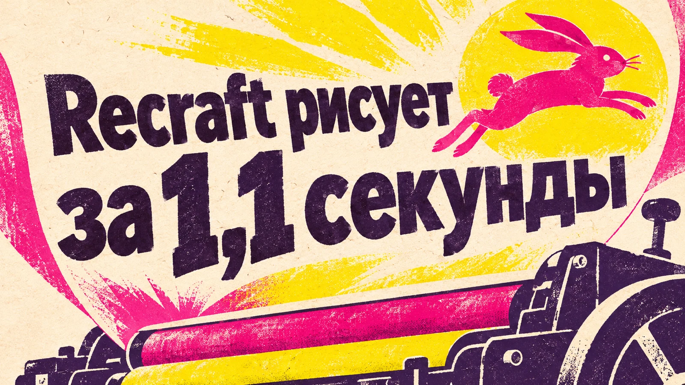
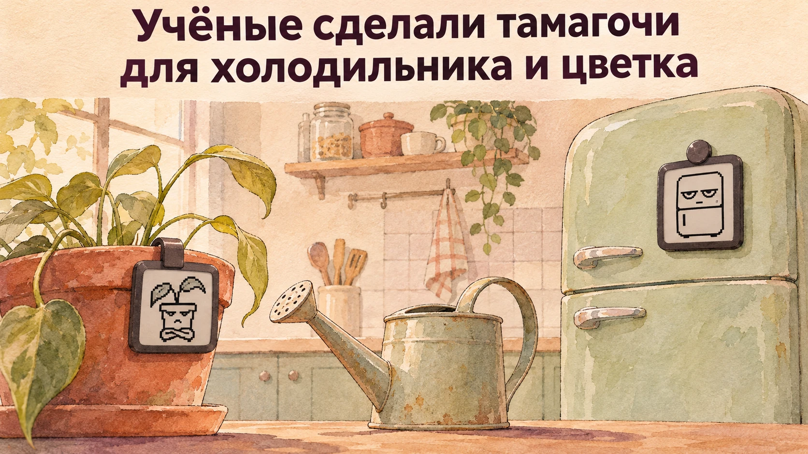

Все статьи
Полный архив опубликованных материалов ХПИИ в порядке выхода.
17 ноября 2026

GPT-6 Astra помогла физику найти решение задачи, над которой работали больше 50 лет
Новости ИИНатаниэль Крейг с помощью GPT-6 Astra предложил математическую конструкцию для непертурбативного описания Стандартной модели на решётке. О роли нейросети физик рассказал 15 ноября.

В США остановили все вылеты, заподозрили ИИ за $875 млн — виновника ищут среди маршрутизаторов
Новости ИИПосле остановки вылетов в США 13 ноября подозрения возникли вокруг ИИ-системы SMART. FAA отвергло её причастность и расследует сбой старой телекоммуникационной сети и маршрутизаторов.

Alibaba выпустила Qwen4-Max: из обучения нейросети убрали инструкции для кибератак
Новости ИИAlibaba выпустила флагманскую Qwen4-Max с дополнительными мерами против злоупотребления моделью для кибератак, архитектурой MoE и миллионным контекстом.

США и Россия тормозят договор об оружии, которое само выбирает цели
Скайнет просыпаетсяСША и Россия выступают против начала переговоров об обязательном договоре об автономном оружии на конференции ООН в Женеве 16–20 ноября. Вашингтон предлагает ещё пять лет разрабатывать необязательные правила.

Картинка за 1,1 секунды: Recraft ускорила нейросеть и научила её лучше писать текст
Новости ИИRecraft представила V4.1 Flash V2: медианная генерация за 1,1 секунды в тесте разработчика и средние 1,5 секунды по данным DesignArena. Улучшены текст на изображениях и детали.

Маск и 180 тысяч человек требуют вернуть Хуанга в NVIDIA, но совет директоров против
Новости ИИИлон Маск и другие технологические руководители поддержали петицию за возвращение Дженсена Хуанга в NVIDIA. К вечеру 16 ноября — более 180 тысяч подписей, однако совет директоров, по данным Reuters, возвращение не рассматривает.

Конкуренту NVIDIA дали $720 млн. Хотя его чипов ещё нет в продаже
Новости ИИБританский разработчик ИИ-чипов Fractile привлёк $720 млн при оценке компании в $7 млрд. Новый ускоритель с памятью над вычислительными элементами ожидается в продаже не ранее 2027 года.

Овца на крыше принесла фильму приз в $500 тысяч
Новости ИИАргентинская PURGA Studio получила главный приз Higgsfield Global Film Festival — $500 тысяч — за короткометражку Listen to MEH о пастухе и упрямой овце.

Claude за 8 часов сделал шутер из одного предложения
Новости ИИФеликс Ризеберг из Anthropic поручил Claude Fable 5.2 создать браузерный шутер Saltline одним запросом. По словам автора, первый прогон занял восемь часов и стоил около $550 по тарифам API.
16 ноября 2026

ИИ-певица забрала четыре награды на первой премии для нейросетей
Новости ИИВиртуальная певица Xania Monet получила четыре награды первой американской AI Music Awards. Её создательница Никки Джонс пишет тексты, а музыка и вокал создаются с помощью Suno.

Учёные научили холодильник скучать, а цветок — обижаться
ИИ, ты чего творишь?В Университете Карнеги — Меллона разработали OATs: экраны с ИИ-персонажами для предметов, которые реагируют на показания датчиков и напоминают об уходе за вещами.

Хакеры взломали Cursor через чужой ключ и добрались до 5000 пользователей
Новости ИИCursor раскрыла результаты расследования взлома: через ключ доступа у партнёра Fireworks злоумышленник получил внутренние данные и подменил расширение Claude Code. До 5000 пользователей могли скачать заражённую версию.

DeepSeek разрешила создать своего ИИ-помощника
Новости ИИDeepSeek открыла разработчикам API для веб-поиска, чтения файлов и ссылок, распознавания речи и озвучивания. Появился и открытый демонстрационный чат-клиент.
ИИ помог написать полицейский рапорт — суд отпустил подозреваемого
ИИ, ты чего творишь?В Аризоне суд освободил подозреваемого в пьяной езде: в полицейском рапорте использовалась Truleo AI, но исходные записи офицера суду не предоставили.

ByteDance выпустила Seedance 2.5 Flash — вдвое быстрее и на треть дешевле
Новости ИИByteDance запустила Seedance 2.5 Flash в ModelArk: видео 720p по $0,152 за секунду, заявлено ускорение генерации и снижение цены на 34% относительно Seedance 2.5. Максимальное разрешение Flash — 720p.

Маск уволил 60 сотрудников Grok Imagine
Новости ИИThe Information сообщило о сокращении 60 сотрудников команды Grok Imagine. После этого компания объявила о доступности генерации изображений и видео в основном чате Grok.

ИИ нашёл на обычной ЭКГ признак риска внезапной смерти
Новости ИИУчёные UC Berkeley нашли на обычной ЭКГ ранее не описанный признак риска внезапной сердечной смерти. Исследование Nature опубликовано 24 июня 2026 года; клиническое применение требует дальнейших испытаний.

Runway открыла ИИ для роботов, обученный на обычных видео
Новости ИИRunway открыла веса и код модели Praxis-1 для управления роботами по Apache 2.0. Обученный на видеозаписях ИИ предсказывает движения; в симуляционном тесте RoboLab-120 показал 46,2% успешных попыток.

llama.cpp дошла до версии 1.0 и меняет правила обновлений
Новости ИИКоманда llama.cpp выпустила версию 1.0.0 с новыми правилами совместимости программного интерфейса. В релизе удалены устаревшие функции, добавлены новые возможности локального запуска моделей.

Agile Robots привлекла $500 млн на производство роботов
Новости ИИНемецкая Agile Robots получила $500 млн инвестиций при оценке $8,5 млрд. Завод компании под Мюнхеном рассчитан на выпуск до 10 тысяч гуманоидов в год; это проектная мощность, а не фактический объём.